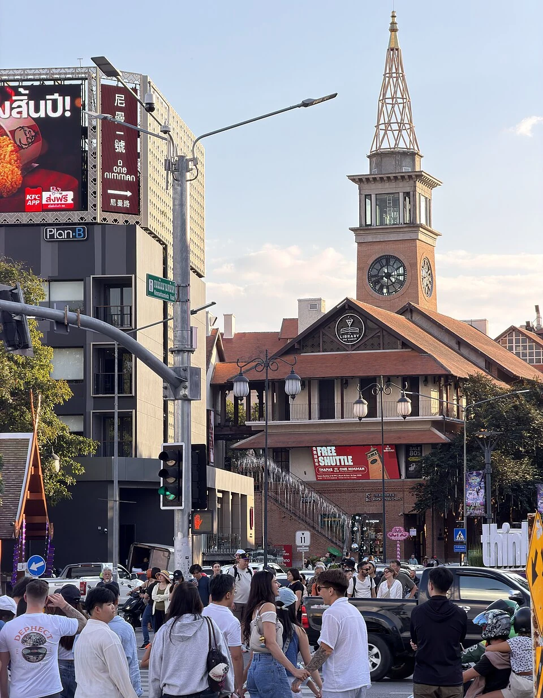

先找“何时可以使用”
有效期通常说明这份签证可在什么窗口内使用，具体是入境截止还是其他含义，要看签发机关的字段解释。不能只读到一个靠后的日期，就把房子订到那天。即使签证仍有效，护照、入境次数与访问目的也可能影响能否使用；不同国家文件的英文标签未必完全一致。
以泰国驻伦敦使馆的DTV说明为例，页面写五年、多次入境，又单列每次180日。这恰好说明两层时间并存。伦敦页面可以用于理解这一区别，但其受理居住资格、资金材料与费用不能直接拿来替代中国大陆受理馆要求。
再找“这次可以停多久”
每次停留不是简单复制签证有效期。入境后应检查护照章、电子记录或获发准证中的实际信息；若看不懂或与预期不一致，应向目的地移民部门核实。不要先在手机里加180日，之后才发现自己所持类别、延期条件或记录与示例不同。
假设一张文件在2026年10月签发，允许多次使用；你计划2026年11月16日入境。应在行程表上分别记录签证有效日期、本次实际入境日和本次获准离境期限，不以“还有几年才过期”替代最后一栏。这个假设没有替任何人的文件计算最终日期。


没有签证贴纸，也有停留上限
马来西亚中马互免问答适用于特定中国护照与短期访问目的，仍规定每次与累计停留上限。免签省去的是事先申请某类签证的步骤，不是省去入境审查和期限。房东说“可以月租”，只能说明他愿意怎样卖房间，不能说明你获准住多久。
住宿表中的晚数、航空公司的当地起飞日与移民记录都应按当地时间核对。午夜前落地、第二天入住、凌晨离境，会让三张凭证显示不同日期。将它们放在同一张时间线上，往往比反复搜索“一个月到底几天”更能发现问题。
延期与再次入境是另外的动作
泰国DTV页面提到向移民局申请延长停留，这不是自动发生的。应把“原有期限”“已提交申请”“已获批准的新期限”分开记录。申请已递交不等于必然延长；在没有相应确认时，不把期望结果写入不可退的租约。再次入境也必须符合当时签证与入境条件。
同样，某次出境不会让所有制度的累计记录都归零。存在90/180日等限制时，要核其适用身份与官方计算方式，不能只留一个最新入境章。用旅游免签、工作准证或其他设施入境的记录，也应分别保留，以便官方按真实身份判断。
一张表核完再付款
把证件名称、签发机关、护照号码、有效期、入境次数、本次实际入境日期和停留期限列好。对照电子签证时先查姓名与号码，再查日期；号码错了，即使有效期看起来很长，也不能自行认定文件能用。存一份离线副本，原件与记录保留在安全位置。
最后才填航班、退房和续住安排。跨城旅行不等于出境，换一家酒店也不改变移民期限。若租期长于获准时间，先谈缩短或退订；若入境时给的期限比预期短，立即处理行程，不等到最后一个周末才联系机构。所有日期变更都应同步到住宿与工作安排。
来源与阅读范围
- 泰国驻伦敦使馆：DTV · 本轮核读 2026-10-22
5年多次、每次180日；伦敦受理材料 页面2026-09-08更新，英国/爱尔兰/英国海外领土永久居留证明及当地材料不能外推中国大陆。
- 马来西亚移民局：中马互免签证问答 · 本轮核读 2026-10-22
中国普通及公务普通护照，短期访问、30日与90/180日限制 核读6页；从到达日计，Q4截止时刻措辞有歧义，具体期限应核准入境记录；不外推在华次日算法。